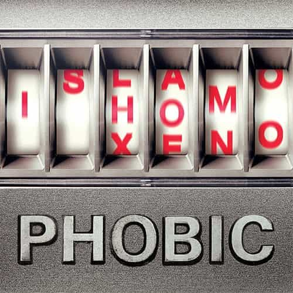

André is a young European who left his decaying country in 2012 for greener pastures. He enjoys exploring subterranean places, reading about a host of interconnected topics, and yearns for Tradition.


When we were blue pills, some words would elicit in us Pavlovian answers. We would crawl at anything that appeared “racist” or tied to skin color. Anything deemed “Nazi” would immediately remind us of the infamous gas chambers. Getting thus determined in political thinking, with a negative conditioning on the right and a positive conditioning on the left—equality, diversity, democracy, such and such are good—, most of us would “spontaneously” lean leftwards… until reality started clashing with the expectations we were fed on.
The red pill metaphor means stepping outside an illusory world. Subconscious frames and conditioning, nevertheless, can efficiently prevent us from taking any way out. And the de-conditioning is not easy. Haven’t you ever been tempted to retort leftist categories against leftists, by claiming that “dems are the real fascists”—implying fascism is bad—or that “white urban elves are the real racists and privileged”—implying white racism and privilege are still the problem? Such arguments actually never step out of the left’s frames.
Here I step out of these frames to apply what the left did to our identities and culture: deconstruction. Nature is not a “social construction,” masculinity hasn’t been invented by men, but the Cathedral’s system has. Last week, I went through some of the smears they use against us, and here are some more.
Since the beginning of its negative use, this notion has had a rather convoluted path. The word “racism” appeared in print at end of the nineteenth century. It could, then, be used positively or negatively, depending on the user’s own view: a French anarchist called “racists” ethnocultural alliances, such as pan-latinism or pan-slavism, based on belonging to a particular breed we would hardly call a race nowadays, whereas a pro-identitarian review used the word positively some years later:
I express my best wishes for the success of your projects, because I am convinced that, in the federation of the peoples of Langue d’Oc fighting for their interests and the emancipation of their racist thought, the prestige of Toulouse will benefit. (Here, p.101)
Eventually, the notion would be used on a mass scale by heavily biased activists, such as the biology-denying anthropologist Franz Boas or Leon Trotsky. Its association with Hitler and the “Nazis”, then with a white colonization smeared as “oppression” and “exploitation”, achieved to bind it to an overly negative connotation, turning the word into a powerful instrument of ideological bludgeoning. The race card became a potent threat: if a white person dared to criticize the actions of some aggressive “person of color”, the latter would just have to mention the r-word for the former to waive.
In the most basic sense, the notion of racism means mostly a denial of human biodiversity. “We’re one humanity, noticing differences means constructing them, that’s reyciss!” But then some minoritist groups have been opposing the race-blind, one-humanity mindset under the guide of opposing “oppression”: “no, we’re not all the same, whites are denying us a proper identity!” This is of course a double bind. If we notice race differences, we’re racists, if we pretend they don’t exist or deny them, we’re also racists.
Two examples show what is really at stake here. First, remember the 90s, when whites were supposed to go colorblind and race became a taboo? In the mid-2000s the Left did a U-turn, and “race” was spread on many media and academic works. They were free to use the notion. We were not. Second, in 2015, NAACP manager Rachel Dolezal was outed as a white woman pretending to be black. The media wavered between mocking and blaming her. But if race is purely a social construction, why cannot anyone be white or black by choice? Blacks who shouted “Dolezal isn’t black!” clearly implied one is intrinsically black and not made so. In other words, they were race realists. Does that make them “racists”?
The word “racist” got a blurred, broad sense, to the point where interracial porn can be deemed so because a masculine white guy showing dominance over a black chick would be intrinsically “oppressive”, without the least hint of any biological theory of HBD. In truth, it is an instrument of Leftist bludgeoning, mainly if not only used against whites, and the polymorphous uses of the word only make it a more potent Damocles sword.
Michael Derrick Hudson had to pose as Yi-Fen Chou to bypass a genuinely questionable discrimination
Initially a legitimate word, “discrimination” has been widely appropriated by cultural Marxists as well. The Latin word discriminis originally meant discernment, that is, the ability to notice or properly assess differences and boundaries. Modern English kept this root in expressions such as “indiscriminately”, which refers to blindness, rashness, and the lack of consideration. In the classic sense, discrimination meant a sound judgment, based on the awareness of differences and determinations.
In the midst of the twentieth century, the rising Big Left appropriated the word and turned it upside down. “Discrimination” became synonymous with “deciding from abusive generalities” or “distinguishing from unfair criteria.” Combined with the demonization of “racism”, the so-called anti-discriminatory stance meant denying whites the right to protection from miscegenation and collective sovereignty.
Of course, there is a consummate hypocrisy at work here, as the Left constantly practices ideological and class discrimination. If you come from the Midwest and want to succeed in humanities, you’d better hide the social codes of your original milieu and mimic urban hipsterism. Likewise, being a conservative, nationalist, traditionalist, pro-white… in the milieus cornered by the leftist establishment can have you mistreated and barred from employment. Only 6 to 11 per cent of college teachers refer to themselves as conservatives. People on the right, though, are not less intelligent or able: they are just barred from institutions the left monopolized, including social networks moderation.
In the name of opposing “discriminations”, liberals actually discriminate through affirmative action and “diversity”, which mean dispossessing whites by handing out employments to less able people on the basis of their purported victimhood—which itself implies an anti-white, anti-male charge. What we have here is another tool of ideological bludgeoning. Those who control the institutions will shriek against “unfair criteria” of discernment while applying their own. The real victim and charged is always the same.

This one has been used to medicalize and psychiatrize the debate. Instead of evaluating what someone says, for example when someone makes a warning about the potentially deleterious effects of mass immigration, liberals will attack the speaker by deeming him to be disordered or irrational. In ancient Greece, φόβος (phobos) or φόβια referred to aversion or negative proclivities towards something. The word was picked up by psychiatrists to refer to an irrational or excessive fear of something—with some fine-grained distinctions: fear of snakes in an environment full of poisonous ones isn’t a disorder, obsession over venomous snakes in a snakeless environment is.
Only later, of course, it was appropriated by you-know-who to smear conservatives and normal people who showed reluctant to leftward pushes. When we see how much those who warned about upsetting the Western racial equilibrium were actually right in their predictions—from Lothrop Stoddard to the 60s republicans—it becomes clear that speaking of “phobia” here is a mere slur.
Interestingly, Wikipedia warns us on the behalf of psychiatrists that “phobia” has a precise clinical meaning and should not be used too easily:
[Xenophobia and homophobia] are not phobias. They are derogatory terms for negative attitudes towards certain categories of people or other things, used in an invalid analogy with the medical usage of the term. These terms were coined with the purpose of shedding a negative light on the people within these opposing groups, by suggesting that everyone within has an irrational fear towards the objects of the terms.
Beyond the departments of psychology, it seems like the establishment dwellers didn’t get the memo. Some “scholars” tried to push forth a new buzzword, “multicultiphobia”, in a pathetic attempt to pathologize criticism of the multiculturalist ideology. Others got more success in demonizing any social restraint on gluttonous women as “fatphobia”, because steering them to be healthy is obviously a disorder.
The split between legitimate, clinic uses of the word “phobia”—with a precise meaning attached—and fuzzy bludgeoning uses everywhere else bears analogy with another case: for long, someone like Stephen Jay Gould has been considered by non-specialists as an eminent specialist of evolutionary theories, thanks to the cooperation of media machine and New York intellectuals, whereas any real specialist knew he had no legitimacy and spread misinformation. Shut up, researcher, Big Left took your stuff.
The very concept of populism shows how much the establishment separated from any loyalty or care to the ordinary people. Blaming “populism” is a way to reject people wholesomely: people ought to lose sovereignty because, y’know, managers know it all better than you and democracy could lead to bad events—understand: people freeing themselves from globalism—; people are no more the people of a country but a boundless mass with no inheritance and no ethnocultural identity; people are no more a being endowed with particular rights…
What has been dubbed populism is nothing else than supporting the concerns of ordinary people. Now, the very existence of peoples is denied through postmodernist deconstructionism, and at least white peoples have no right to owning their territory, their countries, or to even protect themselves from unwanted arrivals. Yesterday, you were an American and I was French, but now we’re just random atoms floating along the channels of Big Market.
Peoples were never treated so badly through history. In the Middle Ages, so much smeared by complacent modern historians, the Third Estate was integrated into a cast system, free peasants were sovereigns of their fields, prices and selling rights were regulated so that each productive agent could make ends meets. Skilled craftsmen belonged to guilds, not to mention fraternities. Most people weren’t that rich, but at least they were acknowledged as the people of the country and were part of the social edifice.
Today, most of us are more or less disintegrated, thanks to massive outsourcing of jobs, legal and illegal immigration blurring all boundaries and taking the resources, unrestrained female hypergamy meaning no more trustworthy mate for the average Joe… up to the denial of our condition of autochthons bearer of rights. “Populism” is about becoming acknowledged, integrated to our own societies, and endowed with dignity again.
This word has become associated with military marches, scary music, and virtually synonymous with oppression, violence, no thought and no freedom of speech. Retrospectively, I don’t understand neither the hate of the military nor its amalgamation with a particular form of government. The military field has always been a masculine institution, part of our life experiences and initiation rituals, and now, we’ve got a militarized police without much courage.
According to a smart contemporary, actual fascism rose mostly as an answer to the hostile attitude of workers and Bolshevism against the middle classes. Downgraded, numbed, dispersed and threatened by wannabe Red Guards, middle class people organized as well and struggled to maintain the social edifice. Eventually the fascisti leaders would seize the power, and then, create a working society, based at least in part on a healthy recognition of differences in abilities and vocations.
It can be said that fascisti were often defiant towards “phrase-worshipping”: they were realistic enough to go beyond the smokescreen of “Democracy”, “Representation” and so on and see who was using these. But even then, thinkers such as Julius Evola were able to publish under the Fascist regime almost completely freely—before getting outcast by left-leaning decision-makers after 1945.
What liberals call “fascism” can be spotted mostly in Leftism itself. SJW violence destroying careers and personal lives, subtle repression through political correctness, are far more oppressive to any healthy and legitimate citizen than historical fascism was.
Leon Trotsky theorized about the “permanent revolution” his political family should aim to push. Leftism, indeed, is all about perpetual discontent and pushing. It lives only through perpetually waging a metapolitical war. Conservatism may be stultifying, but at least it cannot be honestly accused to foster social division or cultural conflicts.
Identifying and rejecting the very thought structure of liberal bias will free us of being vulnerable to bludgeoning or ideological conditioning. Next time a mangina calls you a “fascist”, asks him about why he thinks fascism was actually bad. Failing a satisfactory response, I’m sure he will at least show a priceless expression.
Read Next: 5 Ugly Framing Tactics Leftists Use To Smear Dissenters